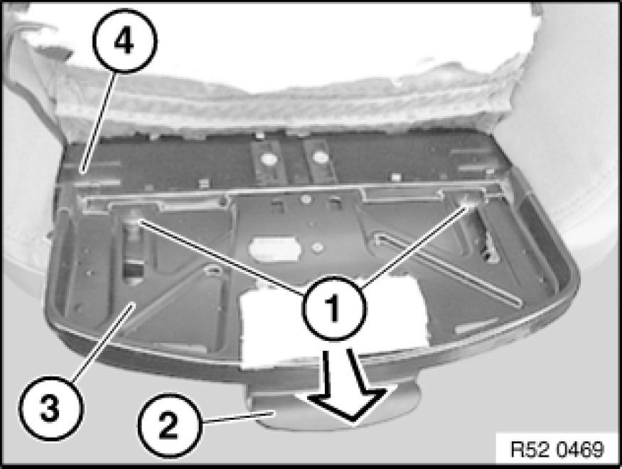

Removing and Installing/Replacing Thigh Support Holder on Front Left or Rght Seat (Sports/Electric)
52 16 095 - Removing and installing/replacing thigh support holder on front left or right seat (sports/electric)
Unfasten thigh support and pull completely towards front.

Detaching cushion for thigh support:
Bend open retaining plates (1) and remove cover piping (2).
Note:
Cushion (1) is attached at front with double-sided adhesive tape (3) to holder (2).
Pull cushion (1) towards top off holder (2).
Lever trim wire (1) out of mounts (2).
Installation:
Stick new double-sided adhesive tape (4) to holder (3) or attach mount with spray adhesive.

Note:
The operation "Removing cushion for thigh support" ends here.
Removal of "Thigh support holder" only:
Unhook spring (1) at bottom from holder (2) and seat frame (3).

Release screws (1).
Press operating lever (2) fully and detach holder (3) for thigh support towards front from seat frame (4).
Installation:
Following parts on holder (5) must not be damaged:
1 - Mounts for trim wire
2 - Holding-down elements for trim wire
3 - Guide sleeves
4 - Double-sided adhesive tape (replace or coat with spray adhesive for assembly)
Installation:
If necessary, release screws (1) and remove guide rails (2) from seat frame (3).